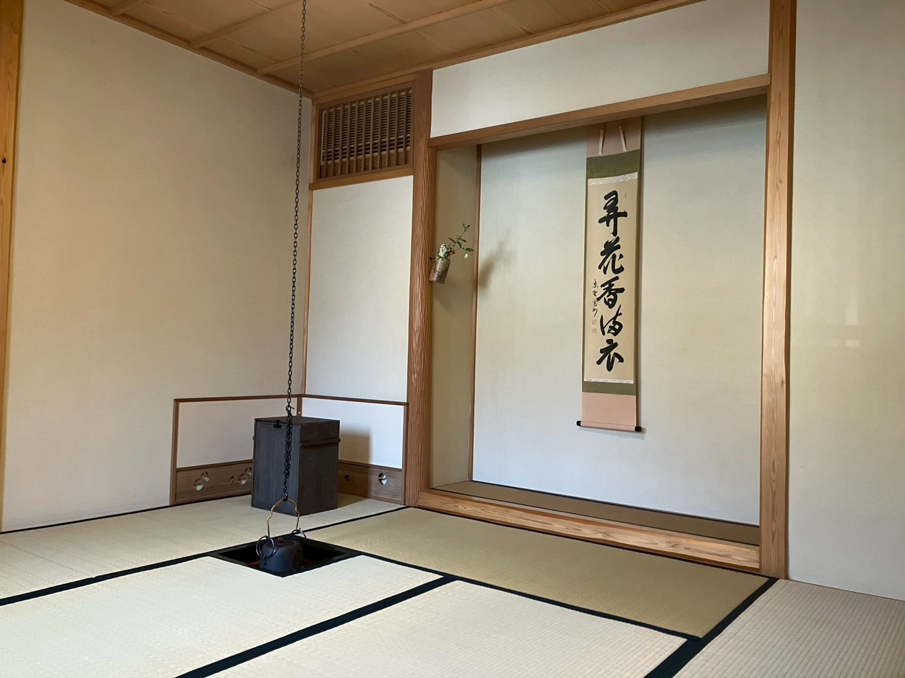

A 60-minute tea ceremony for up to four guests, hosted in English in a quiet corner of Bunkyō. ¥10,000 (≈ $70).
Reserve a seat"Most tea ceremonies for travelers happen in Asakusa or Kyoto, scheduled in 30-minute slots between costume rentals. We host one party at a time in a residential lane near Sengoku Station — a neighborhood Tokyoites consider quietly elegant and visitors rarely find."
Remove shoes, settle into the tea room. Chair seating available; no seiza required.
Seasonal wagashi sweets followed by the host's preparation of usucha — thin matcha — in the traditional manner.
The host walks through the utensils, the season's hanging scroll, and the chabana arrangement.
You make a bowl yourself, with guidance. No prior experience expected.
Open conversation. Ask anything.
"I host here because Bunkyō is where I learned that tea is, before anything else, a way of paying attention to the moment we're in."
Read more about the host →"Five small worlds within walking distance — perfect for the half-day around your reservation."
A traditional tea room in Sengoku, Bunkyō-ku.
5-minute walk from Sengoku Station, Toei Mita Line, Exit A4.
Sessions at 10:00, 14:00, and 16:00.
Closed Mondays and Tuesdays. Outside hours by request.
Submit a request via Google Form. We confirm by hand within 24 hours and send a Stripe payment link to complete the booking.
Visa, Mastercard, Amex, JCB.
Full refund 7+ days in advance.
50% refund 3-6 days before. No refund within 48 hours.
Confirmed by hand within 24 hours. We write back with availability and a Stripe payment link.
Open reservation form ↗